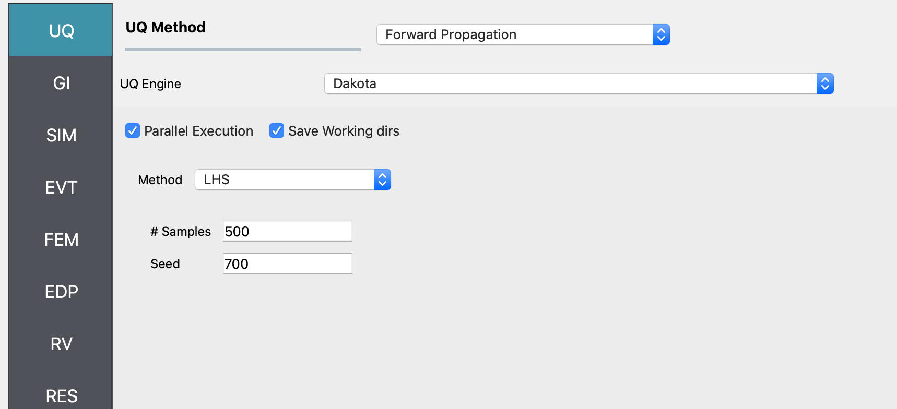
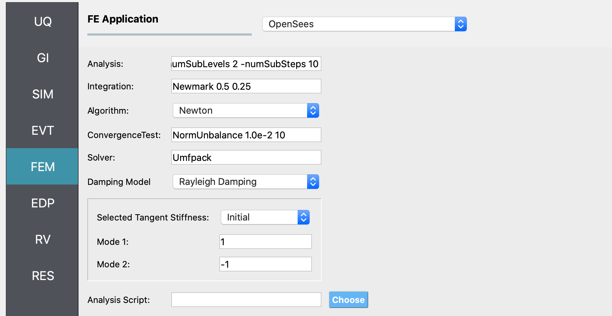
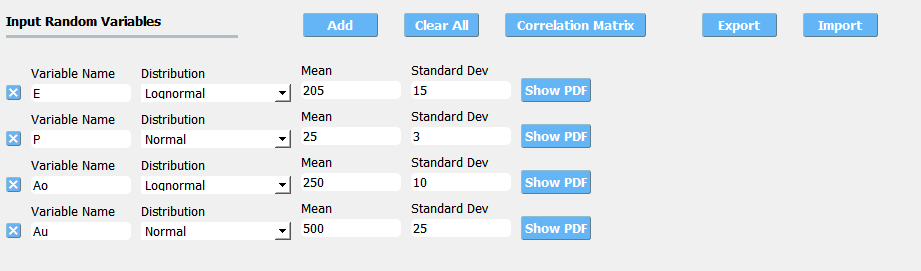

Multi-Story Shear Building - Coupled CFD-FEM Digital Twin
Problem files |
Overview
This example uses a NHERI wave-flume digital twin, the OSU LWF, to simulate a scaled structure during wave loading in HydroUQ. Two-way coupled OpenFOAM-OpenSees is configured to simulate the scenario.
You will define a Waterborne Event (EVT) to determine the engineering demand parameters (EDP) on a specified structure, i.e. EVT –> EDP, with the following steps:
Configure a FOAMySees simulation event (EVT). This is a two-way coupling of OpenFOAM Finite Volume Method (FVM) for Computational Fluid Dynamics (CFD) and OpenSees Finite Element Analaysis (FEA) for Computational Structural Dynamics (CSD).
Next, the coupled model will determine floor loads on the building, also known as intensity measures (IM) in common performance-based engineering (PBE) nomenclature.
Then, perform an OpenSees finite element analysis (FEM) simulation of the building by taking IMs as inputs.
Finally, recieve engineering demand parameters (EDP) of the structural response. Though beyond this example, you can use these EDPs to perform a fragility analysis of the structure.
Set-Up
The dataset in this example originates from experimental tests conducted in the Hinsdale Wave Research Laboratory’s Large Wave Flume at Oregon State University (OSU LWF), Corvallis, in 2020. Refer to Lewis 2023 [Lewis2023] and Bonus 2023 [Bonus2023] for details.

Coupled Digital Twin Illustration
Model
This model is characterized by the parameters:
Structural weight, \(w\), in kN as a random variable with a mean of 100 kN and a standard deviation of 10 kN.
^ .. warning:
**Do NOT** place the files in your ``root``, ``downloads``, or ``desktop`` folder. The running application will copy every unrelated file in the directories and subdirectories multiple times.
Workflow
The inputs needed to run this example can be loaded into the HydroUQ user interface by selecting the Coupled Digital Twin example from the Examples menu at the top of the application.
The inputs can also be set up manually through the following steps:
Start the application and select the UQ panel: In the UQ Method drop-down menu, select the Bayesian Calibration option. In the UQ Engine dropdown menu select UCSD-UQ option. In the Model dropdown, select the Hierarchical option. Enter the values in this panel as shown in the figure below. A brief explanation of the different user input fields can be found in the User Manual.
{kind=link}

Inputs in the UQ panel
Next in the FEM panel: Select OpenSees and populate the Input Script field by choosing the path to the model file.
{kind=link}

Inputs in the FEM panel
Select the RV tab from the input panel: This panel should be pre-populated with the names of the variables that were defined in the model scripts. If not, press the Add button to create a new field to define the input random variable. Enter the same variable name, as required in the model script. For this example, choose the Normal probability distribution for all the random variables and enter the parameter values for each distribution as shown in the figures below:
{kind=link}

In the EDP panel: Create the output quantities corresponding to each of the experiments with a descriptive name, as shown in the figures below:
Click on the Run button. This will create the necessary input files to perform a Bayesian calibration of the hierarchical model, run the analysis, and display the results when the analysis is completed.
The RES tab will open with the workflow results when the simulation completers. The results produced are sample values drawn from the distribution that represents the aleatory uncertainty in the estimated material parameters from each of the datasets.
The Summary tab shows the mean, standard deviation, and coefficient of variation of each of the seven parameters of the material model that were inferred in this example.
In the Data Values tab of the RES panel, a chart and a table with all the sample values are shown. By clicking on the data inside the columns of the chart with the left or right mouse button (
M1andM2), different chart types are created and shown in the chart area on the left.
Warning
The tmp.SimCenter directory is cleared every time the RUN button is clicked in HydroUQ. So, if you want to restart the analysis using one of the sampling results files outlined above, make sure to copy the results file to a location outside the tmp.SimCenter directory at the end of the analysis.
References
Lewis, N. (2023). Development of An Open-Source Methodology for Simulation of Civil Engineering Structures Subject to Multi-Hazards. PhD thesis, University of Washington, Seattle, WA. ISBN: 979-8-381408-69-0.
Bonus, J. (2023). Evaluation of Fluid-Driven Debris Impacts in a High-Performance Multi-GPU Material Point Method [University of Washington]. In ProQuest Dissertations and Theses. ISBN: 979-8-381406-66-5. https://www.proquest.com/dissertations-theses/evaluation-fluid-driven-debris-impacts-high/docview/2915819774/se-2?accountid=14784